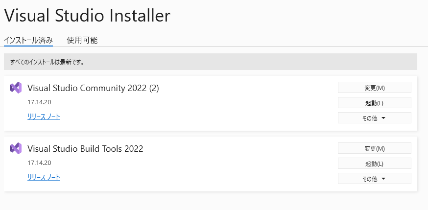

Visal Studio Installerを開き、Visual Studio Community 2022とVisual Studio Build Tools 2022を最新に更新したら解決した。
ドキュメントによるとUE5.6ではバージョン17.14が推奨されている（5.7の記載はない）。
Visual Studio をセットアップする
2025/11/14-UE5.7-問題：error LNK2019と出てパッケージ化が失敗
解決

ログ
UATHelper: Warning: パッケージ化 (Windows): Warning: Visual Studio 2022 compiler is not a preferred version
[2025.11.14-02.27.41:783][835]UATHelper: Error: パッケージ化 (Windows): Module.LiveCoding.cpp.obj : error LNK2019: ̊O V { __std_search_1 "char const * __cdecl std::_Search_vectorized(char const * const,char const * const,char const * const,unsigned __int64)" (??$_Search_vectorized@$$CBD$$CBD@std@@YAPEBDQEBD00_K@Z) ŎQ Ƃ ܂
[2025.11.14-02.27.41:795][835]UATHelper: Error: パッケージ化 (Windows): Module.LiveCoding.cpp.obj : error LNK2019: ̊O V { __std_search_2 "wchar_t const * __cdecl std::_Search_vectorized(wchar_t const * const,wchar_t const * const,wchar_t const * const,unsigned __int64)" (??$_Search_vectorized@$$CB_W$$CB_W@std@@YAPEB_WQEB_W00_K@Z) ŎQ Ƃ ܂
[2025.11.14-02.27.41:795][835]UATHelper: Error: パッケージ化 (Windows): Module.GeometryAlgorithms.1.cpp.obj : error LNK2019: ̊O V { __std_mismatch_4 "void __cdecl std::_Make_heap_unchecked *,struct std::less >(class std::array *,class std::array *,struct std::less)" (??$_Make_heap_unchecked@PEAV?$array@H$01@std@@U?$less@X@2@@std@@YAXPEAV?$array@H$01@0@0U?$less@X@0@@Z) ŎQ Ƃ ܂
[2025.11.14-02.27.41:795][835]UATHelper: Error: パッケージ化 (Windows): Module.GeometryAlgorithms.2.cpp.obj : error LNK2001: O V { __std_mismatch_4 ͖ ł
[2025.11.14-02.27.41:795][835]UATHelper: Error: パッケージ化 (Windows): Module.GeometryAlgorithms.2.cpp.obj : error LNK2019: ̊O V { __std_minmax_element_d "struct std::pair __cdecl std::_Minmax_element_vectorized(double * const,double * const)" (??$_Minmax_element_vectorized@N@std@@YA?AU?$pair@PEANPEAN@0@QEAN0@Z) ŎQ Ƃ ܂
[2025.11.14-02.27.41:805][835]UATHelper: Error: パッケージ化 (Windows): Module.TraceAnalysis.cpp.obj : error LNK2019: ̊O V { __std_find_first_of_trivial_pos_1 "unsigned __int64 __cdecl std::_Find_first_of_pos_vectorized(char const * const,unsigned __int64,char const * const,unsigned __int64)" (??$_Find_first_of_pos_vectorized@DD@std@@YA_KQEBD_K01@Z) ŎQ Ƃ ܂
[2025.11.14-02.27.41:805][835]UATHelper: Error: パッケージ化 (Windows): reverb_onset_compensator.cc.obj : error LNK2019: ̊O V { __std_minmax_element_f "struct std::pair __cdecl std::_Minmax_element_vectorized(float * const,float * const)" (??$_Minmax_element_vectorized@M@std@@YA?AU?$pair@PEAMPEAM@0@QEAM0@Z) ŎQ Ƃ ܂
[2025.11.14-02.27.41:805][835]UATHelper: Error: パッケージ化 (Windows): reverb_node.cc.obj : error LNK2019: ̊O V { __std_max_element_f "float * __cdecl std::_Max_element_vectorized(float * const,float * const)" (??$_Max_element_vectorized@M@std@@YAPEAMQEAM0@Z) ŎQ Ƃ ܂